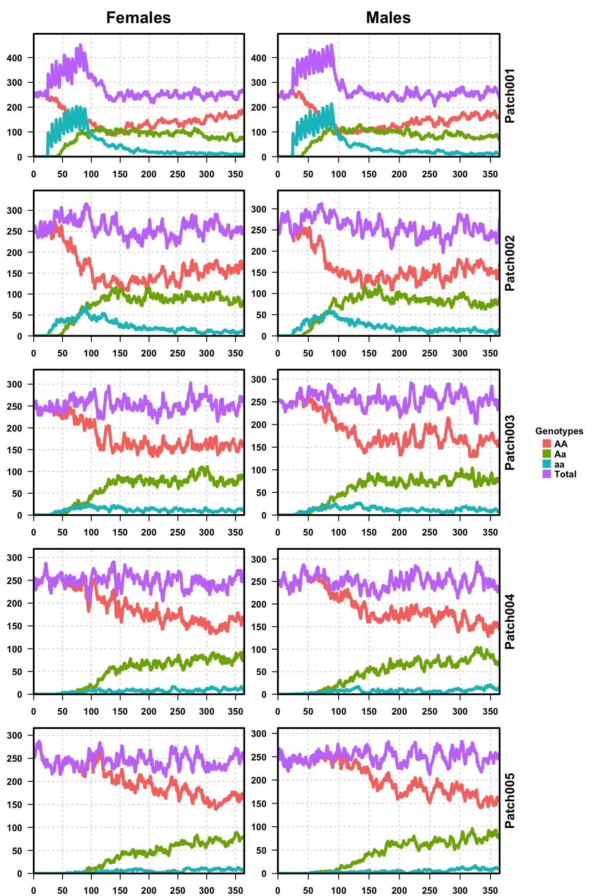
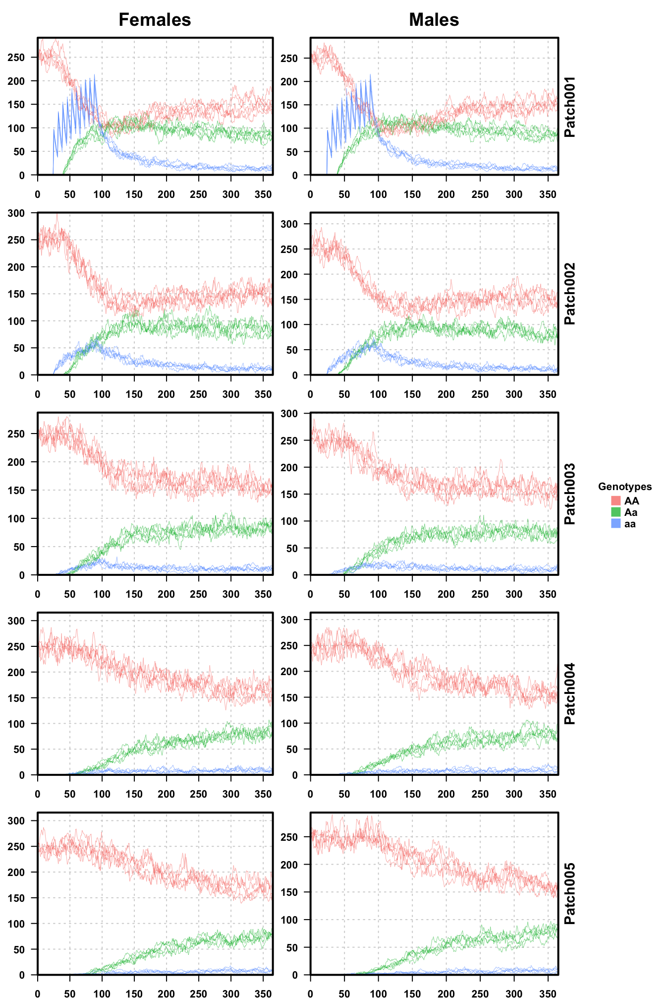

mgdrive_run.RmdThe other vignette has many examples of calculating movement matrices, different simulations, and some theory for comparison. However, it does not go through each step of setting up, running, and analyzing a simulation. This vignette is designed to go through every step of a simulation, exploring why each step is performed, some thoughts on how they can be modified, and looking at the output (if any).
For our example, we will take the Stochastic, Small Migration example from the other vignette as a starting point. We will expand it to 5 populations, so that that code is a bit longer and the file structure becomes more obvious.
For reference, here is the full code for our example. It will be explained piece-by-piece below.
####################
# Load libraries
####################
library(MGDrivE)
####################
# Output Folder
####################
outFolder <- "mgdrive"
dir.create(path = outFolder)
####################
# Simulation Parameters
####################
# days to run the simulation
tMax <- 365
# number of Monte Carlo iterations
nRep <- 5
# each Monte Carlo iteration gets its own folder
folderNames <- file.path(outFolder,
formatC(x = 1:nRep, width = 3, format = "d", flag = "0"))
# entomological parameters
bioParameters <- list(betaK=20,tEgg=5,tLarva=6,tPupa=4,popGrowth=1.175,muAd=0.09)
# a 5-node network with 5% per day migration rate
sitesNumber <- 5
adultPopEquilibrium <- 500
patchPops <- rep(adultPopEquilibrium,sitesNumber)
# auxiliary function
triDiag <- function(upper, lower){
# return matrix
retMat <- matrix(data = 0, nrow = length(upper) + 1, ncol = length(upper) + 1)
# set index values for upper/lower triangles
indx <- 1:length(upper)
# set forward/backward migration using matrix access
retMat[cbind(indx+1,indx)] <- lower
retMat[cbind(indx,indx+1)] <- upper
# set stay probs
diag(x = retMat) <- 1-rowSums(x = retMat)
return(retMat)
}
# fill movement matrix
# Remember, rows need to sum to 1.
moveMat <- triDiag(upper = rep.int(x = 0.05, times = sitesNumber-1),
lower = rep.int(x = 0.05, times = sitesNumber-1))
# batch migration is disabled by setting the probability to 0
batchMigration <- basicBatchMigration(batchProbs=0,
sexProbs=c(.5,.5),
numPatches=sitesNumber)
####################
# Basic Inheritance pattern
####################
# Mendelian cube with standard (default) paraameters
cube <- cubeMendelian()
####################
# Setup releases and batch migration
####################
# set up the empty release vector
# MGDrivE pulls things out by name
patchReleases <- replicate(n=sitesNumber,
expr={list(maleReleases=NULL,femaleReleases=NULL)},
simplify=FALSE)
# choose release parameters
# Releases start at time 25, occur every day, for 5 day.
# There are 50 mosquitoes relaeses every time.
releasesParameters <- list(releasesStart=25,
releasesNumber=10,
releasesInterval=7,
releaseProportion=100)
# generate male release vector
maleReleasesVector <- generateReleaseVector(driveCube=cube,
releasesParameters=releasesParameters,
sex="M")
# generate female release vector
femaleReleasesVector <- generateReleaseVector(driveCube=cube,
releasesParameters=releasesParameters,
sex="F")
# put releases into the proper place in the release list
patchReleases[[1]]$maleReleases <- maleReleasesVector
patchReleases[[1]]$femaleReleases <- femaleReleasesVector
####################
# Combine parameters and run!
####################
# setup parameters for the network. This builds a list of parameters required for
# every population in the network.
netPar <- parameterizeMGDrivE(runID=1, simTime=tMax, nPatch=sitesNumber,
beta=bioParameters$betaK, muAd=bioParameters$muAd,
popGrowth=bioParameters$popGrowth, tEgg=bioParameters$tEgg,
tLarva=bioParameters$tLarva, tPupa=bioParameters$tPupa,
AdPopEQ=patchPops)
# set MGDrivE to run stochastic
setupMGDrivE(stochasticityON = TRUE)
# build network prior to run
MGDrivESim <- Network$new(params=netPar,
driveCube=cube,
patchReleases=patchReleases,
migrationMale=moveMat,
migrationFemale=moveMat,
migrationBatch=batchMigration,
directory=folderNames)
# run simulation
MGDrivESim$multRun(verbose = FALSE)
####################
# Post Analysis
####################
# First, split output by patch
# Second, aggregate females by their mate choice
for(i in 1:nRep){
splitOutput(readDir=folderNames[i],remFile = TRUE, verbose = FALSE)
aggregateFemales(readDir=folderNames[i],genotypes=cube$genotypesID,
remFile=TRUE,verbose = FALSE)
}
# plot output of first run to see effect
plotMGDrivESingle(readDir=folderNames[1],totalPop = TRUE,lwd=3.5,alpha=1)
# plot all 5 repetitions together
plotMGDrivEMult(readDir=outFolder,lwd=0.35,alpha=0.75)####################
# Load libraries
####################
library(MGDrivE)
#> Loading required package: data.table
#> Loading MGDrivE: Mosquito Gene Drive ExplorerStep one, load MGDrivE.
####################
# Output Folder
####################
outFolder <- "mgdrive"
dir.create(path = outFolder)Here, we setup the folder for simulation data. Since this is a local folder, it doesn’t exist, and needs to be created. If you already have a folder prepared, make sure it is empty. MGDrivE gives a warning if there are other things in the folder (to prevent overwriting of data), but will run fine if the folder is not empty.
Next, there are several parameters that need to be set for a simulation. The run time and the number of repetitions are crucial. Once the number of repetitions has been chosen, the folder names can be created.
####################
# Simulation Parameters
####################
# days to run the simulation
tMax <- 365
# number of Monte Carlo iterations
nRep <- 5
# each Monte Carlo iteration gets its own folder
folderNames <- file.path(outFolder,
formatC(x = 1:nRep, width = 3, format = "d", flag = "0"))
folderNames
#> [1] "mgdrive/001" "mgdrive/002" "mgdrive/003" "mgdrive/004" "mgdrive/005"Here, folder names reflect their purpose - holding each repetition of our stochastic simulation. The precise names don’t matter later on, but they do need to be unique (or data gets overwritten, MGDrivE will not throw a warning about this), and in a location that your user account has permission to create directories.
The biological parameters were chosen for Aedes aegypti in our original simulations. These parameters represent:
betaK: Daily number of eggs laid per female mosquitoetEgg: Number of days spent in the egg stagetLarva: Number of days spent in the larval stagetPupa: Number of days spent in the pupa stagepopGrowth: Population growth per generationmuAD: Daily death rate for adult mosquitoes# entomological parameters
bioParameters <- list(betaK=20,tEgg=5,tLarva=6,tPupa=4,popGrowth=1.175,muAd=0.09)Next, we set the number of populations in the simulation. Here, we chose 5 populations, each containing 500 mosquitoes. After that, we setup the landscape.
# a 5-node network with 5% per day migration rate
sitesNumber <- 5
adultPopEquilibrium <- 500
patchPops <- rep(adultPopEquilibrium,sitesNumber)
# landscape
# auxiliary function
triDiag <- function(upper, lower){
# return matrix
retMat <- matrix(data = 0, nrow = length(upper) + 1, ncol = length(upper) + 1)
# set index values for upper/lower triangles
indx <- 1:length(upper)
# set forward/backward migration using matrix access
retMat[cbind(indx+1,indx)] <- lower
retMat[cbind(indx,indx+1)] <- upper
# set stay probs
diag(x = retMat) <- 1-rowSums(x = retMat)
return(retMat)
}
# fill movement matrix
# Remember, rows need to sum to 1.
moveMat <- triDiag(upper = rep.int(x = 0.05, times = sitesNumber-1),
lower = rep.int(x = 0.05, times = sitesNumber-1))
moveMat
#> [,1] [,2] [,3] [,4] [,5]
#> [1,] 0.95 0.05 0.00 0.00 0.00
#> [2,] 0.05 0.90 0.05 0.00 0.00
#> [3,] 0.00 0.05 0.90 0.05 0.00
#> [4,] 0.00 0.00 0.05 0.90 0.05
#> [5,] 0.00 0.00 0.00 0.05 0.95Our landscape will be a line, with each population only connected to the populations on either side. We set a 5% per day migration rate. There are several examples in the other vignette for setting up different landscapes.
Finally, there is the possibility of large-group movement facilitated by humans (using Aedes for example, this could be boats or water containers in truck beds, etc.). MGDrivE handles this through basicBatchMigration(). For simplicity, we are ignoring this possibility (by setting the probability of it to zero).
####################
# Basic Inheritance pattern
####################
# Mendelian cube with standard (default) paraameters
cube <- cubeMendelian()For this experiment, we use simple Mendelian inheritance. MGDrivE has several other inheritance patterns, which include:
cubeReciprocalTranslocations(): Reciprocal TranslocationscubeHomingDrive(): CRISPR-based homing drive, with two resistance allelescubeMEDEA(): Maternal Effect Dominant Embryonic ArrestWhile we use the default parameters, there are several fitness costs that can be applied. Every cost is applied in a genotype-specific manner. The optional fitness costs are:
MGDrivE uses a list specifying releases of males or females to paramtrize the release schedule. The initial list is NULL, and only if there are releases to be performed is anything added.
####################
# Setup releases and batch migration
####################
# set up the empty release vector
# MGDrivE pulls things out by name
patchReleases <- replicate(n=sitesNumber,
expr={list(maleReleases=NULL,femaleReleases=NULL)},
simplify=FALSE)
# choose release parameters
# Releases start at time 25, occur every day, for 5 day.
# There are 50 mosquitoes relaeses every time.
releasesParameters <- list(releasesStart=25,
releasesNumber=10,
releasesInterval=7,
releaseProportion=100)Here, we are performing 10 releases of 100 individuals. These releases start on day 25 and occur every 7 days. We now generate what this looks like for a male release.
# generate male release vector
maleReleasesVector <- generateReleaseVector(driveCube=cube,
releasesParameters=releasesParameters,
sex="M")
maleReleasesVector[[1]]
#> $nuM
#> AA Aa aa
#> 0 0 100
#>
#> $tRelease
#> [1] 25The release vector generated is 10 elements long, because we have 10 releases, and each element contains the number and genotype of individuals to release and the time of that release. We now generate the same thing for female releases, and insert the releases into our release list so that releases are only performed in the first patch.
# generate female release vector
femaleReleasesVector <- generateReleaseVector(driveCube=cube,
releasesParameters=releasesParameters,
sex="F")
# put releases into the proper place in the release list
patchReleases[[1]]$maleReleases <- maleReleasesVector
patchReleases[[1]]$femaleReleases <- femaleReleasesVectorThe final steps before running our simulation! All of the parameters we have setup are combined using parameterizeMGDrivE(). Additionally, this function calculates equilibrium values for aquatic populations, death rates, and density dependence for every population. See the documentation for all of the possible options.
####################
# Combine parameters and run!
####################
# setup parameters for the network. This builds a list of parameters required for
# every population in the network.
netPar <- parameterizeMGDrivE(runID=1, simTime=tMax, nPatch=sitesNumber,
beta=bioParameters$betaK, muAd=bioParameters$muAd,
popGrowth=bioParameters$popGrowth, tEgg=bioParameters$tEgg,
tLarva=bioParameters$tLarva, tPupa=bioParameters$tPupa,
AdPopEQ=patchPops)MGDrivE can run in either a deterministic or stochastic setting, so we set it to stochastic for these simulations.
Finaly, we setup the complete network to run our simulation.
# build network prior to run
MGDrivESim <- Network$new(params=netPar,
driveCube=cube,
patchReleases=patchReleases,
migrationMale=moveMat,
migrationFemale=moveMat,
migrationBatch=batchMigration,
directory=folderNames)
#> initializing patch: 1 of 5
#> initializing patch: 2 of 5
#> initializing patch: 3 of 5
#> initializing patch: 4 of 5
#> initializing patch: 5 of 5
# list folders to show that they have been created
list.files(path = outFolder)
#> [1] "001" "002" "003" "004" "005"The Network object represents the metapopulation of MGDrivE. It can be setup to hold 1 patch, and therefore be a single population, or several patches, and be a true metapopulation. Documentation can be found by running ?Network. The different notation is an attribute of the R6 structure that MGDrivE is built on (Shoutout to R6). The params argument takes the network parameters created by parameterizeMGDrivE(). The inheritance pattern is supplied in the driveCube option, which we chose to be Mendelian. Migration can be different for males and females, so even though here we use the same migration matrix, users can supply different ones if desired. The migrationBatch option must always be filled in, but can be set to zero, as done here, if it isn’t desired or for deterministic simulations (where it doesn’t make sense). Finally, the directory parameter takes the vector of folder names, and creates them for use during the simulation.
Finally, MGDrivE can be run once using MGDrivESim$oneRun() or several times using MGDrivESim$multRun(). The benefit of using the built-in multiple repetition function is that memory is not released between runs, just cleared, so run-time is reduced. Additionally, each of these functions can produce a progress bar, which is suppressed in all of our vignettes.
MGDrivE outputs 2 *.csv files every simulation. These are stored as {F|M}_RunXXX.csv for female and male adults. In them are the population counts for every genotype at every day.
# first and last repetitions
list.files(path = outFolder)[1]
#> [1] "001"
list.files(path = list.files(path = outFolder, full.names = TRUE)[1], recursive = TRUE)
#> [1] "F_Run001.csv" "M_Run001.csv"
list.files(path = outFolder)[5]
#> [1] "005"
list.files(path = list.files(path = outFolder, full.names = TRUE)[5], recursive = TRUE)
#> [1] "F_Run005.csv" "M_Run005.csv"This is the raw output from MGDrivE. The files contain all of the information from the simulation.
# read in male and female files
mMat <- as.matrix(read.csv(file = list.files(path = outFolder, full.names = TRUE,
recursive = TRUE)[2],
header = TRUE, sep = ","))
fMat <- as.matrix(read.csv(file = list.files(path = outFolder, full.names = TRUE,
recursive = TRUE)[1],
header = TRUE, sep = ","))
# look at male file header
colnames(mMat)
#> [1] "Time" "Patch" "AA" "Aa" "aa"The header for male files (M_RunXXX.csv) is shown above. They always containst the time, patch, and every possible genotype in the simulation. For the Mendelian inheritance here, there are three possible genotypes, AA, Aa, aa. The Time and Patch columns will always be the same, but the number of genotypes changes depending on the inheritance pattern used. For example, CRISPR-based homing inheritance has 10, so there would be 12 columns in the male files. Below, we see how each patch is designated in the file.
head(x = mMat, n = 2*sitesNumber)
#> Time Patch AA Aa aa
#> [1,] 1 1 250 0 0
#> [2,] 1 2 250 0 0
#> [3,] 1 3 250 0 0
#> [4,] 1 4 250 0 0
#> [5,] 1 5 250 0 0
#> [6,] 2 1 241 0 0
#> [7,] 2 2 243 0 0
#> [8,] 2 3 249 0 0
#> [9,] 2 4 268 0 0
#> [10,] 2 5 249 0 0Notice how each patch is printed for every time point, then the time increases and every patch is printed again. Time = 0 is at equilibrium, where we start the simulations, then the patches begin to diverge, staying around equilibrium but no longer being exactly the same.
The female output files (F_RunXXX.csv) are slightly more complicated. Since MGDrivE keeps track of females and their mates, the output maintains that as well. Thus, the header in the female files will be \(2 + \text{numGenotypes}^2\) long. For Mendelian inheritance, this looks like:
# look at female file header
colnames(fMat)
#> [1] "Time" "Patch" "AAAA" "AAAa" "AAaa" "AaAA" "AaAa" "Aaaa"
#> [9] "aaAA" "aaAa" "aaaa"The Time and Patch columns are the same as in male files, but the “genotypes” are now a combination of the female genotype and her mate’s genotype. The length of the header is 11, consistent with having 3 genotypes, times the number of mate genotypes, plus the Time and Patch columns. The header “genotypes” are printed female genotype first, male (mate) second. So, the aaAA column represents females that are aa mated to males that are AA.
The Time/Patch pattern is the same as in the male files.
head(x = fMat, n = 2*sitesNumber)
#> Time Patch AAAA AAAa AAaa AaAA AaAa Aaaa aaAA aaAa aaaa
#> [1,] 1 1 250 0 0 0 0 0 0 0 0
#> [2,] 1 2 250 0 0 0 0 0 0 0 0
#> [3,] 1 3 250 0 0 0 0 0 0 0 0
#> [4,] 1 4 250 0 0 0 0 0 0 0 0
#> [5,] 1 5 250 0 0 0 0 0 0 0 0
#> [6,] 2 1 246 0 0 0 0 0 0 0 0
#> [7,] 2 2 251 0 0 0 0 0 0 0 0
#> [8,] 2 3 254 0 0 0 0 0 0 0 0
#> [9,] 2 4 258 0 0 0 0 0 0 0 0
#> [10,] 2 5 248 0 0 0 0 0 0 0 0There are several things that we can do from here. We can work with the raw output directly, but this gets difficult as the simulations get larger. Therefor, we have provided functions to split the raw output by patches, generating a new file for every patch.
# First, split output by patch
for(i in 1:nRep){
splitOutput(readDir=folderNames[i],remFile = TRUE, verbose = FALSE)
}splitOutput splits the raw output by patch, generating one *.csv for every patch in our simulation. We loop over each repetition folder, removing the original files, and replacing them with individual patch files. Inside each repetition folder, we now see the files:
# first and last repetitions
list.files(path = outFolder)[1]
#> [1] "001"
list.files(path = list.files(path = outFolder, full.names = TRUE)[1], recursive = TRUE)
#> [1] "F_Run001_Patch001.csv" "F_Run001_Patch002.csv"
#> [3] "F_Run001_Patch003.csv" "F_Run001_Patch004.csv"
#> [5] "F_Run001_Patch005.csv" "M_Run001_Patch001.csv"
#> [7] "M_Run001_Patch002.csv" "M_Run001_Patch003.csv"
#> [9] "M_Run001_Patch004.csv" "M_Run001_Patch005.csv"
list.files(path = outFolder)[5]
#> [1] "005"
list.files(path = list.files(path = outFolder, full.names = TRUE)[5], recursive = TRUE)
#> [1] "F_Run005_Patch001.csv" "F_Run005_Patch002.csv"
#> [3] "F_Run005_Patch003.csv" "F_Run005_Patch004.csv"
#> [5] "F_Run005_Patch005.csv" "M_Run005_Patch001.csv"
#> [7] "M_Run005_Patch002.csv" "M_Run005_Patch003.csv"
#> [9] "M_Run005_Patch004.csv" "M_Run005_Patch005.csv"
# read in examples of new male/female files
twoFiles <- list.files(path = outFolder, full.names = TRUE,
recursive = TRUE)[c(1,6)]
# read in male and female files
mMat <- as.matrix(read.csv(file = twoFiles[2], header = TRUE, sep = ","))
fMat <- as.matrix(read.csv(file = twoFiles[1], header = TRUE, sep = ","))We again look at a male file, examining the header and the first few rows.
head(x = mMat, n = 5)
#> Time AA Aa aa
#> [1,] 1 250 0 0
#> [2,] 2 241 0 0
#> [3,] 3 250 0 0
#> [4,] 4 233 0 0
#> [5,] 5 241 0 0The Patch column has been removed, it is now part of the file name, and the Time column increases every row. This is the first repetition, first male file.
Female files are still a little more complicated. They have been split by patch, but still retain the mate information.
head(x = fMat, n = 5)
#> Time AAAA AAAa AAaa AaAA AaAa Aaaa aaAA aaAa aaaa
#> [1,] 1 250 0 0 0 0 0 0 0 0
#> [2,] 2 246 0 0 0 0 0 0 0 0
#> [3,] 3 253 0 0 0 0 0 0 0 0
#> [4,] 4 235 0 0 0 0 0 0 0 0
#> [5,] 5 223 0 0 0 0 0 0 0 0The Patch column is gone, the Time column counts as expected, and we still have all of the mate information.
In the event that we don’t want/need the mate information, we can remove it using the aggregateFemales() function.
# Second, aggregate females by their mate choice
for(i in 1:nRep){
aggregateFemales(readDir=folderNames[i],genotypes=cube$genotypesID,
remFile=TRUE,verbose = FALSE)
}This collects all of the females for each genotype, summing over the possible mates.
# changed female files in first repetition
list.files(path = outFolder)[1]
#> [1] "001"
list.files(path = list.files(path = outFolder, full.names = TRUE)[1], recursive = TRUE)
#> [1] "F_Aggregate_Run001_Patch001.csv" "F_Aggregate_Run001_Patch002.csv"
#> [3] "F_Aggregate_Run001_Patch003.csv" "F_Aggregate_Run001_Patch004.csv"
#> [5] "F_Aggregate_Run001_Patch005.csv" "M_Run001_Patch001.csv"
#> [7] "M_Run001_Patch002.csv" "M_Run001_Patch003.csv"
#> [9] "M_Run001_Patch004.csv" "M_Run001_Patch005.csv"
# read in examples of new female file
fMat2 <- as.matrix(read.csv(file = list.files(path = outFolder,
recursive = TRUE,
full.names = TRUE)[1],
header = TRUE, sep = ","))We see that all of the female files have been updated to denote that they are aggregated over their mate genotypes. Internally, the files now resemble the male files.
head(x = fMat2, n = 5)
#> Time AA Aa aa
#> [1,] 1 250 0 0
#> [2,] 2 246 0 0
#> [3,] 3 253 0 0
#> [4,] 4 235 0 0
#> [5,] 5 223 0 0This doesn’t show much change, but if we compare the female file split by patch to the aggregated female file at the time of the release, we can see that the genotypes have been combined.
# show non-aggregated female file split by patch
# This is for patch number 1
fMat[(releasesParameters$releasesStart-2):(releasesParameters$releasesStart+2), ]
#> Time AAAA AAAa AAaa AaAA AaAa Aaaa aaAA aaAa aaaa
#> [1,] 23 266 0 0 0 0 0 0 0 0
#> [2,] 24 263 0 0 0 0 0 0 0 0
#> [3,] 25 263 0 5 0 0 0 64 0 31
#> [4,] 26 265 0 5 0 0 0 58 0 27
#> [5,] 27 254 0 6 0 0 0 46 0 23
cat("\n")
# show aggregated female file
# This is for patch number 1
fMat2[(releasesParameters$releasesStart-2):(releasesParameters$releasesStart+2), ]
#> Time AA Aa aa
#> [1,] 23 266 0 0
#> [2,] 24 263 0 0
#> [3,] 25 268 0 95
#> [4,] 26 270 0 85
#> [5,] 27 260 0 69Looking closely, we see the “AAAA” column combined wiht the “AAaa” column in the first output sum to the value in the “AA” column in the second.
The same goes for the “aaAA” and “aaaa” columns in the first and the “aa” column in the second.
MGDrivE comes with two built-in plot functions, plotMGDrivESingle() and plotMGDrivEMult().plotMGDrivESingle() takes the name of one repetition folder, and plots all of the patches in it for both males and females.
# plot the first repetition
plotMGDrivESingle(readDir=folderNames[1],totalPop = TRUE,lwd=3.5,alpha=1)
The left Y-axis is population size, the right Y-axis is patch number, and the X-axis is time. We can see the releases in the first patch, equal for males and females, and follow their migration down the plots from patch 1 to patch 5. The total population remains around 250 individuals for males and females, which gives the expected equilibrium value of 500.
We can also plot all of our repetitions using plotMGDrivEMult().

plotMGDrivEMult() takes the name of the main directory, and finds all of the repetitions inside of it. It then plots males and females by patch, the same as plotMGDrivESingle(), but overlays a trace of every repetition for each patch.